Multiline TRL#
Multiline TRL is a two-port VNA calibration utilizing at least two transmission lines with different physical lengths and at least one reflective standard that is identical on both ports. The electrical parameters of the lines don’t need to be known, but the transmission lines should have identical construction (same propagation constant and characteristic impedance). The reflect standard reflection coefficient doesn’t need to be known exactly, phase needs to be known with 90 degree accuracy.
If the measured phase differences of the lines is a multiple of 180 degrees the calibration is singular. The calibration accuracy is worse the closer the line measurement phases are to the singularities, the best accuracy is obtained in the two lines case when the phase difference is 90 degrees. Multiple lines can be used to extend the frequency range where the calibration is accurate.
skrf has two implementations: the NIST-style multiline calibration (NISTMultilineTRL) and the TUG multiline calibration (TUGMultilineTRL). They use the same standards and give the same answer (most of the time), they differ in how the measurement noise impact the result, so this example runs the two side by side.
All data used in this example is generated with skrf, and the code for it is given at the start. The notebook then demonstrates how to use both methods and compares different combinations of lines to show how the calibration accuracy improves with the number of lines. Lastly, a Monte Carlo analysis compares the two methods.
Setup#
[1]:
%matplotlib inline
import matplotlib.pyplot as plt
import numpy as np
import skrf
from skrf.calibration import NISTMultilineTRL, TUGMultilineTRL, terminate
from skrf.media import CPW, Coaxial
from skrf.network import two_port_reflect
skrf.stylely()
Simulation to generate the input data#
Here is how we make the data used in the rest of the example.
Create frequency and Media#
[2]:
freq = skrf.Frequency(1, 125, 249, 'GHz')
# CPW media used for DUT and the calibration standards
cpw = CPW(freq, w=49.1e-6, s=25.5e-6, ep_r=9.9,
t=4.9e-6, rho=1/4.11e7)
print(cpw.z0[0])
# 1.0 mm coaxial media for calibration error boxes
coax1mm = Coaxial(freq, z0_port=50, Dint=0.434e-3, Dout=1.0e-3, sigma=1e8)
print(coax1mm.z0[0])
f_ghz = cpw.frequency.f*1e-9
(45.65554776395502+0j)
(50.20564772916889-0.15748463048337036j)
/home/alex/code/scikit-rf-docs/skrf/media/cpw.py:240: RuntimeWarning: Conductor loss calculation invalid for lineheight t (4.9e-06) < 3 * skin depth (2.4825569540602707e-06)
self.alpha_conductor, self.alpha_dielectric = self.analyse_loss(
Make realistic looking error networks.#
Propagation constant determination is iterative and doesn’t work as well when the error networks are randomly generated
[3]:
X = coax1mm.line(1, 'm', z0=58, name='X')
Y = coax1mm.line(1.1, 'm', z0=40, name='Y')
plt.figure()
plt.title('Error networks')
X.plot_s_db()
Y.plot_s_db()
# Realistic looking switch terms
gamma_f = coax1mm.delay_load(0.2, 21e-3, 'm', z0=60)
gamma_r = coax1mm.delay_load(0.25, 16e-3, 'm', z0=56)
plt.figure()
plt.title('Switch terms')
gamma_f.plot_s_db()
gamma_r.plot_s_db()
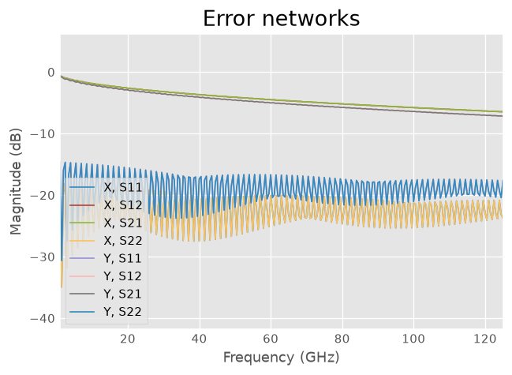
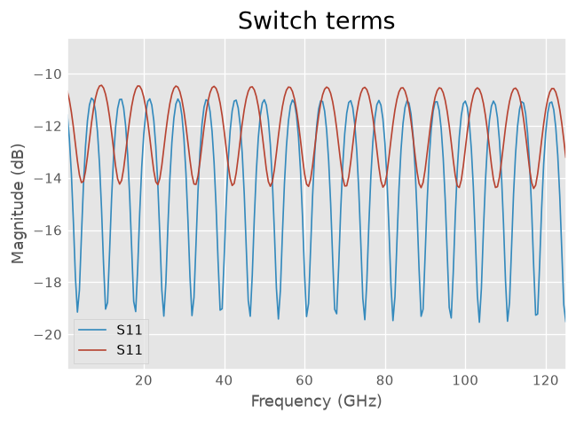
Generate Fictitious measurements#
[4]:
# Lengths of the lines used in the calibration, units are in meters
line_len = [300e-6, 1200e-6, 2950e-6, 3550e-6, 5050e-6]
lines = [cpw.line(x, 'm') for x in line_len]
# Attenuator with mismatched feed lines
dut_feed = cpw.line(1.5e-3, 'm', z0=60)
dut = dut_feed**cpw.attenuator(-10)**dut_feed
res_50ohm = cpw.resistor(50) ** cpw.short(nports=2) ** cpw.resistor(50)
# Through and non-ideal short, 75 um behind the middle of the thru.
# Real reflection coefficient is solved during the calibration
short = cpw.delay_short(75e-6, 'm')
actuals = [
cpw.thru(),
two_port_reflect(short, short),
]
actuals.extend(lines)
# Measured
measured = [X**k**Y for k in actuals]
# Switch termination
measured = [terminate(m, gamma_f, gamma_r) for m in measured]
# Add little noise to the measurements
for m in measured:
m.add_noise_polar(0.001, 0.1)
names = ['thru', 'reflect', 'line300um', 'line1200um', 'line2950um',
'line3550um', 'line5050um']
for k,name in enumerate(names):
measured[k].name=name
# Noiseless DUT so that all the noise will be from the calibration
dut_meas = terminate(X**dut**Y, gamma_f, gamma_r)
dut_meas.name = 'DUT'
res_50ohm_meas = terminate(X**res_50ohm**Y, gamma_f, gamma_r)
res_50ohm_meas.name = 'res_50ohm'
Simple Multiline TRL#
The two classes take the same information, but they group it differently. NISTMultilineTRL takes one flat list of measured standards, thru first, then the reflects, then the lines. TUGMultilineTRL keeps the lines and the reflects in separate arguments, and the first line is taken as the thru.
[5]:
# define the line lengths in meters (including thru)
l = [0, 300e-6, 1200e-6, 2950e-6, 3550e-6, 5050e-6]
# Do the calibration
cal = NISTMultilineTRL(
measured = measured, # Measured standards
Grefls = [-1], # Reflection coefficient of the reflect, -1 for short
l = l, # Lengths of the lines
refl_offset = 75e-6, # Reflect offset from the reference plane
er_est = 5, # Estimate of transmission line effective permittivity
switch_terms = (gamma_f, gamma_r) # Switch terms
)
# The same calibration with the TUG method
cal_tug = TUGMultilineTRL(
line_meas = [measured[0]] + measured[2:], # Measured lines, thru first
line_lengths = l, # Lengths of the lines
reflect_meas = [measured[1]], # Measured reflect
reflect_est = [-1], # Reflection coefficient of the reflect, -1 for short
reflect_offset = 75e-6, # Reflect offset from the reference plane
er_est = 5, # Estimate of transmission line effective permittivity
switch_terms = (gamma_f, gamma_r) # Switch terms
)
# Correct the DUT using the above calibrations
corrected = cal.apply_cal(dut_meas)
corrected.name = 'NIST'
corrected.plot_s_db()
corrected_tug = cal_tug.apply_cal(dut_meas)
corrected_tug.name = 'TUG'
corrected_tug.plot_s_db(linestyle='--')
print(f'Largest difference between the two: {abs(corrected.s - corrected_tug.s).max():.2e}')
Largest difference between the two: 1.09e-04
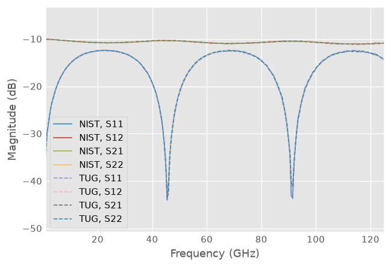
The two methods sit on top of each other.
Compare calibrations with different combinations of lines#
Here we loop through different line combinations to demonstrate the difference in the calibration accuracy.
[6]:
# Run multiline TRL calibration with different combinations of lines
cals = []
cals_tug = []
duts = []
line_combinations = [[0], [4], [0,4], [0,1,2,3,4]]
for used_lines in line_combinations:
# Thru and reflect, plus the lines being used
m = measured[:2] + [measured[2:][i] for i in used_lines]
# Add thru length to list of line lengths
lc = [l[0]] + [l[1:][i] for i in used_lines]
# Do the calibration
cal = NISTMultilineTRL(
measured = m, # Measured standards
Grefls = [-1], # Reflection coefficient of the reflect, -1 for short
l = lc, # Lengths of the lines
refl_offset = 75e-6, # Reflect offset from the reference plane
er_est = 5, # Estimate of transmission line effective permittivity
switch_terms = (gamma_f, gamma_r) # Switch terms
)
# The same lines with the TUG method
cal_t = TUGMultilineTRL(
line_meas = [m[0]] + m[2:],
line_lengths = lc,
reflect_meas = [m[1]],
reflect_est = [-1],
reflect_offset = 75e-6,
er_est = 5,
switch_terms = (gamma_f, gamma_r)
)
# Correct the DUT using the above calibration
corrected = cal.apply_cal(dut_meas)
corrected.name = f'DUT, lines {used_lines}'
duts.append(corrected)
cals.append(cal)
cals_tug.append(cal_t)
Transmission of the corrected DUT#
Plot the corrected DUT calibrated with different combination of calibration lines.
[7]:
plt.figure()
plt.title('DUT S21')
for dut in duts:
dut.plot_s_db(m=1, n=0)
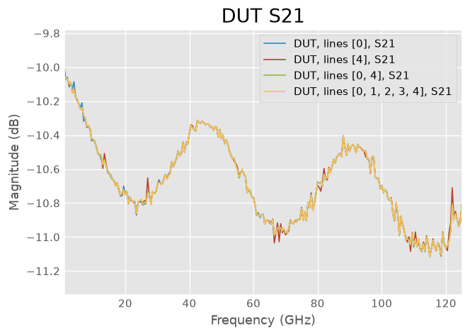
S11 of corrected DUT with different amount of calibration lines#
S11 shows bigger changes.
With one short line low frequencies are very noisy
With only the long line the calibration is very inaccurate at frequencies where the phase difference of the thru and line is close to a multiple of 180 degrees
With both lines calibration accuracy is good everywhere
[8]:
plt.figure()
plt.title('DUT S11')
for dut in duts:
dut.plot_s_db(m=0, n=0)
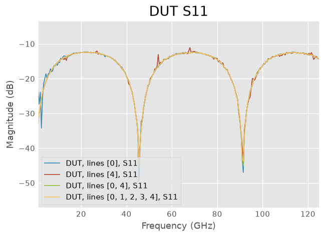
Normalized standard deviation of different calibrations#
Normalized standard deviation can be used to measure the accuracy of the calibration. Lower number means calibration is less sensitive to the measurement noise.
TRL calibration with one 90 degrees long line has normalized standard deviation of 1.
TRL calibration with one 180 degree long lossless line is singular and has infinite normalized standard deviation.
With multiple lines normalized standard deviation less than one is possible.
Note that the nstd is normalized such that it doesn’t consider the actual measurement noise. It’s calculated only from the solved propagation constant and line lengths. The threshold of how large it can be depends on the DUT being measured, measurement noise and the required accuracy of the measurement. If there are large spikes, such as are visible in the long line case below, that’s a sign that the calibration is very close to singular at that frequency and the measurement accuracy is going to be poor.
The TUG method reports the same thing through the eigenvalue \(\lambda\) of its weighted eigenvalue problem, where a small eigenvalue means a sensitive calibration. For \(N\) lines (thru included) the two are related by \(\mathrm{nstd} \approx \sqrt{2N/\lambda}\). The dashed lines below are the TUG eigenvalue converted this way.
[9]:
f_ghz = dut.frequency.f_scaled
plt.figure()
plt.title('Calibration normalized standard deviation')
for e, cal in enumerate(cals):
plt.plot(f_ghz, cal.nstd, label=f'Lines: {line_combinations[e]}')
# The TUG eigenvalue converted to the same scale
for e, cal_t in enumerate(cals_tug):
N = len(line_combinations[e]) + 1
plt.plot(f_ghz, np.sqrt(2*N/cal_t.lambd), 'k--', lw=1)
plt.ylim([0,20])
plt.legend(loc='upper right')
dut.frequency.labelXAxis()
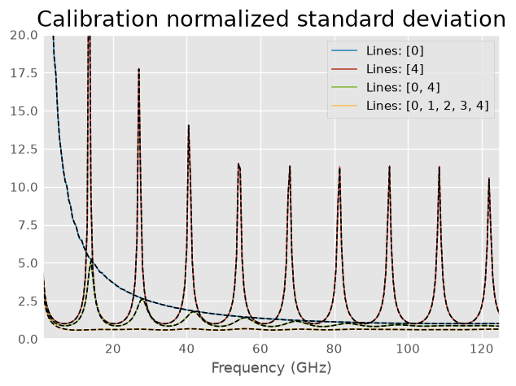
Calculate effective complex relative permittivity of transmission lines used in the calibration#
Effective complex relative permittivity \(\epsilon_{r,eff}\) of a transmission line is related to the propagation constant \(\gamma\) as:
\(\gamma = \frac{2\pi f}{c}\sqrt{\epsilon_{r,eff}}\), where \(c\) equals the speed of light and \(f\) is frequency.
In general it’s a complex value with the imaginary part indicating losses.
[10]:
# Get the cal with all the lines
cal = cals[-1]
cal_tug = cals_tug[-1]
plt.figure()
plt.title('CPW effective permittivity (real part)')
plt.plot(f_ghz, cal.er_eff.real, label='NIST')
plt.plot(f_ghz, cal_tug.er_eff.real, '--', label='TUG')
plt.xlabel('Frequency (GHz)')
plt.legend(loc='lower right')
[10]:
<matplotlib.legend.Legend at 0x7d209beb4740>
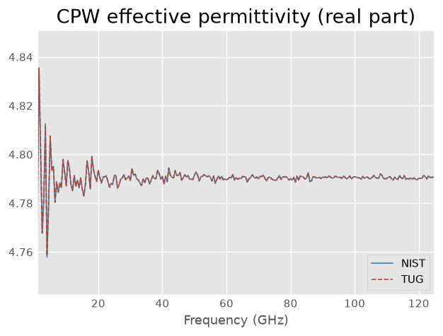
TRL calibration accuracy is the best when line length difference is 90 degrees. Solved propagation constant and effective permittivity however are more accurate the bigger the line length difference is. At low frequencies the estimate is noisier due to the line phase difference being small.
Plot the phase of the solved reflection coefficient#
Applying the calibration to the measured reflect standard we can get the calibrated S-parameters of the unknown reflect.
[11]:
plt.figure()
plt.title('Solved reflection coefficient of the reflect standard')
cal.apply_cal(measured[1]).plot_s_deg(n=0, m=0, label='Solved short')
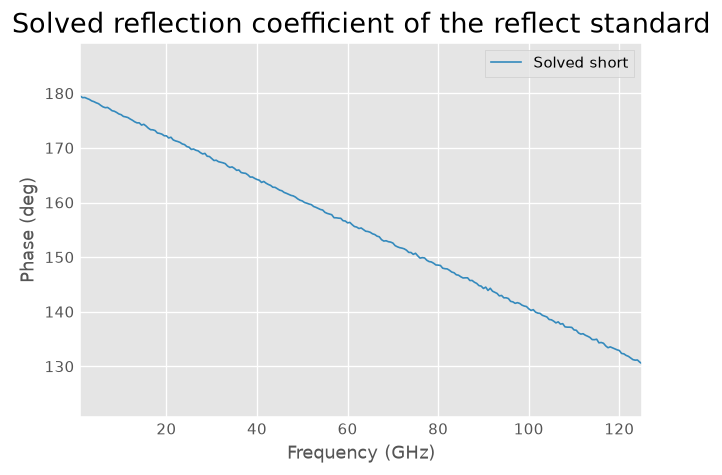
Reference plane shift#
Because propagation constant of the media is solved during the calibration it’s possible to shift the reference plane by a specified distance.
The reference plane shift can be specified with ref_plane argument. The shift should be specified in meters, negative lengths is towards the VNA. By default the same shift is applied to both ports. Unequal shift on the two ports is supported by passing a two element list. Both classes take the same argument.
[12]:
cal_shift = NISTMultilineTRL(
measured = measured, # Measured standards
Grefls = [-1], # Reflection coefficient of the reflect, -1 for short
l = l, # Lengths of the lines
refl_offset = 75e-6, # Reflect offset from the reference plane
er_est = 5, # Estimate of transmission line effective permittivity
switch_terms = (gamma_f, gamma_r), # Switch terms
# Shift reference planes towards VNA by this amount (in m) on both ports
ref_plane = -50e-6
)
# Correct the DUT using the above calibration
corrected_thru = cal.apply_cal(measured[0])
corrected_thru_shifted = cal_shift.apply_cal(measured[0])
corrected_thru.plot_s_deg(m=1, n=0, label='Thru phase')
corrected_thru_shifted.plot_s_deg(m=1, n=0, label='Reference plane shifted thru phase')
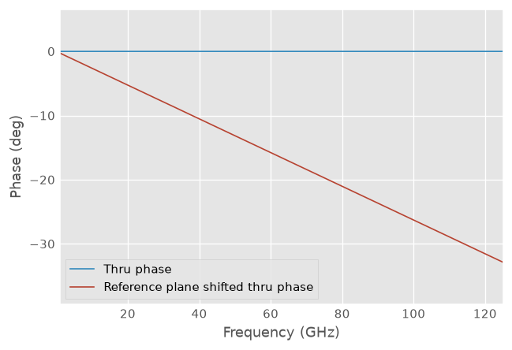
Calibration reference impedance renormalization#
The reference impedance of the calibration is by default the transmission line characteristic impedance. If we know the actual characteristic impedance of the lines we can give it to the calibration routine with the z0_line argument to renormalize the measured S-parameters to a fixed reference z0_ref.
If the conductance per unit length (G) is much lower than the capacitive reactance per unit length (\(j\omega C_0\)), the characteristic impedance of the transmission line can be written in terms of the propagation constant \(\gamma\) and capacitance per unit length \(C_0\):
\(Z_0 = \gamma/(j 2 \pi f C_0)\)
If \(C_0\) is known it can be given to the calibration routine with c0 parameter to renormalize the calibration reference impedance to z0_ref (defaults to 50 ohms) assuming G = 0. If the line is lossy the characteristic impedance is complex valued and giving a single c0 instead of a fixed z0_line is usually more accurate.
In this case we know that the line characteristic impedance is actually 45.7 ohms. To renormalize the calibration from 45.7 ohms to 50 ohms we need to give z0_line=45.7 argument to the calibration routine. With TUGMultilineTRL the same is done afterwards with cal.renormalize(45.7, 50).
[13]:
cal_ref = NISTMultilineTRL(
measured = measured, # Measured standards
Grefls = [-1], # Reflection coefficient of the reflect, -1 for short
l = l, # Lengths of the lines
refl_offset = 75e-6, # Reflect offset from the reference plane
er_est = 5, # Estimate of transmission line effective permittivity
switch_terms = (gamma_f, gamma_r), # Switch terms
z0_line = 45.7, # Line actual characteristic impedance
z0_ref = 50 # Calibration reference impedance
)
cal.apply_cal(res_50ohm_meas).s11.plot_s_db(label=r'50 $\Omega$ termination |$S_{11}$|, Z_ref = line')
cal_ref.apply_cal(res_50ohm_meas).s11.plot_s_db(label=r'50 $\Omega$ termination |$S_{11}$|, Z_ref = 50 $\Omega$')
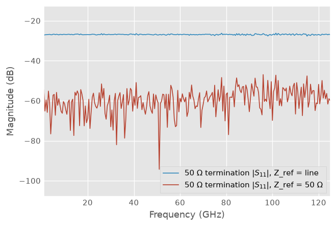
After renormalization the 50 ohm termination measurement shows good matching. It’s not perfectly matched due to the noise in the measurements.
Calibration without reflect measurement#
One nice feature of TUGMultilineTRL is that you can use only line standards if you only care about the propagation constant and S21 and S12 of the calibrated DUT. However, to obtain correct S11 and S22 values of the calibrated DUT, you also need to provide measurement of the reflect standard. This can be seen in the example below, where the phase of S11 does not overlap when using and not using the reflect standard. Note, if you do include the reflect standard, TUGMultilineTRL method
also offers you the capability to provide multiple reflect measurements.
[14]:
# TUG multiline without reflect measurement
cal_no_reflect = TUGMultilineTRL(
line_meas = [measured[0]] + measured[2:],
line_lengths = l,
er_est = 5,
switch_terms = (gamma_f, gamma_r)
)
plt.figure()
plt.title('DUT S11 phase')
cal_tug.apply_cal(dut_meas).plot_s_deg(m=0, n=0, label='TUG w/ reflect')
cal_no_reflect.apply_cal(dut_meas).plot_s_deg(m=0, n=0, linestyle='--', label='TUG w/o reflect')
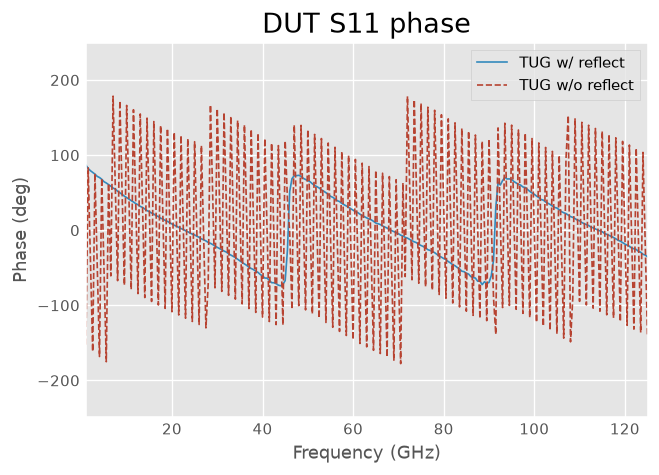
Monte Carlo analysis - NIST vs TUG#
Using MC analysis, we generate synthetic data of the standards with random noise and repeat the process multiple times, each time with a new noise sample. At each trial, we also compute the calibrated DUT, which we use to calculate the mean absolute error (MAE) of the calibration method. The general definition of MAE is as follows:
where \(x_i\) is the \(i\)-th MC trial and \(x_\mathrm{true}\) is the true value. As the reference true value we use the DUT corrected with the measurements generated above, before the Monte Carlo noise is added. This runs both calibrations 100 times over the full frequency grid, so expect it to take about a minute.
[15]:
# Monte Carlo Analysis
print('MC starts: ')
M = 100 # number of trials
mag_std = 0.05 # std of magnitude (linear)
phase_std = 20 # std of phase (degrees)
# Reference value, both methods agree on the unmodified measurements
dut_ideal = cal_tug.apply_cal(dut_meas)
mae_nist = 0
mae_tug = 0
for inx in range(M):
# add noise (make sure to copy and not override the original data)
measured_n = [NW.copy() for NW in measured]
for NW in measured_n:
NW.add_noise_polar(mag_std, phase_std)
# NIST multiline TRL
cal_n = NISTMultilineTRL(measured=measured_n, Grefls=[-1], l=l,
refl_offset=75e-6, er_est=5, switch_terms=(gamma_f, gamma_r))
mae_nist = mae_nist + abs(cal_n.apply_cal(dut_meas).s - dut_ideal.s)/M
# TUG multiline TRL
cal_t = TUGMultilineTRL(line_meas=[measured_n[0]]+measured_n[2:], line_lengths=l,
reflect_meas=[measured_n[1]], reflect_est=[-1], reflect_offset=75e-6,
er_est=5, switch_terms=(gamma_f, gamma_r))
mae_tug = mae_tug + abs(cal_t.apply_cal(dut_meas).s - dut_ideal.s)/M
print(f'MC Index: {inx+1}/{M} done.', end='\r', flush=True)
MC starts:
MC Index: 100/100 done.
Finally, we compute and plot the MAE. The results show that TUG method on average has a lower error compared to the NIST method.
[16]:
plt.figure()
plt.title('Mean Absolute Error')
plt.plot(f_ghz, mae_nist[:,0,0], label='NIST, S11')
plt.plot(f_ghz, mae_nist[:,1,0], label='NIST, S21')
plt.plot(f_ghz, mae_tug[:,0,0], label='TUG, S11')
plt.plot(f_ghz, mae_tug[:,1,0], label='TUG, S21')
plt.legend(loc='upper right')
dut_meas.frequency.labelXAxis()